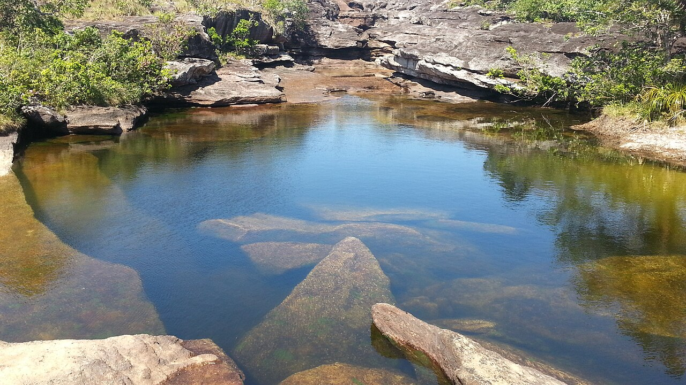
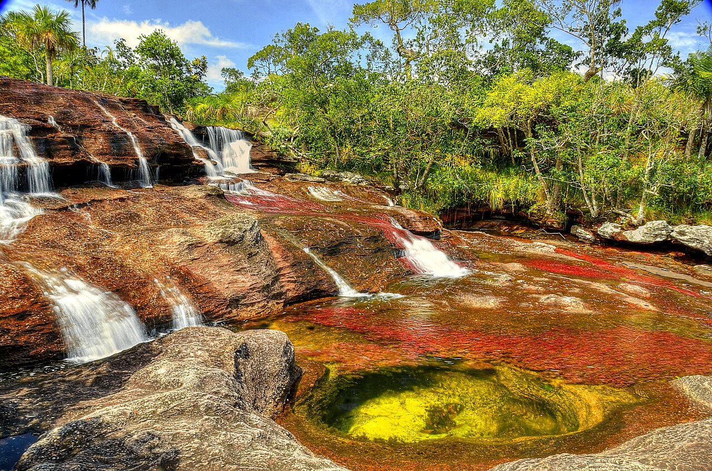
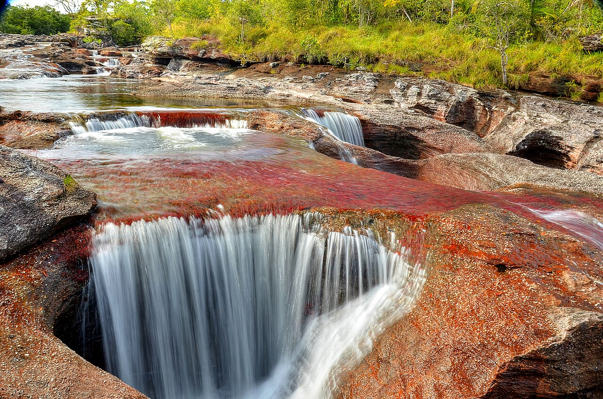

Este pixel es Caño Cristales, el río de los 5 colores — La Macarena, Colombia 🇨🇴
This pixel is Caño Cristales, Colombia's river of five colors 🇨🇴
Un bot recompra este pixel y lo hace fluir por los 5 colores reales del río. Cada recompra duplica su precio — igual que un río, nunca pasa dos veces por el mismo lugar al mismo costo.
A bot re-buys this pixel, cycling it through the river's five real colors. Each re-buy doubles its price — like a river, it never flows past the same point at the same cost.
Entre junio y noviembre, la planta acuática Macarenia clavigera enciende el lecho del río. Hoy el río está en temporada.
From June to November, the aquatic plant Macarenia clavigera sets the riverbed ablaze. The river is in season right now.
Macarenia clavigera, la planta endémica que solo vive aquí.
Macarenia clavigera, an endemic plant that lives nowhere else on Earth.
Arenas doradas que brillan bajo el agua cristalina.
Golden sands glowing under crystal-clear water.
Musgos y algas sobre las rocas de la sierra.
Mosses and algae draped over the mountain rock.
Agua tan pura que casi no lleva sedimentos ni nutrientes.
Water so pure it carries almost no sediment or nutrients.
Rocas del Escudo Guayanés: ~1.200 millones de años.
Guiana Shield rock, ~1.2 billion years old.
Si el canvas de 1000×1000 fuera un mapamundi, este pixel cae exactamente donde está La Macarena, Meta.
If the 1000×1000 canvas were a world map, this pixel lands exactly on La Macarena, Meta, Colombia.


